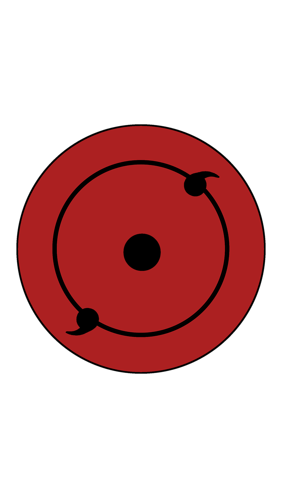

Itachi´s Website

Itachi Uchiha is a character from the anime and manga series Naruto. He was a member of the Uchiha clan, one of the most powerful clans in the Hidden Leaf Village. He initially appears as a villain, having killed his entire clan except for his younger brother Sasuke. However, it is later revealed that he did it under secret orders to prevent a coup and protect the village, making him a tragic hero.
~Itachi Uchiha